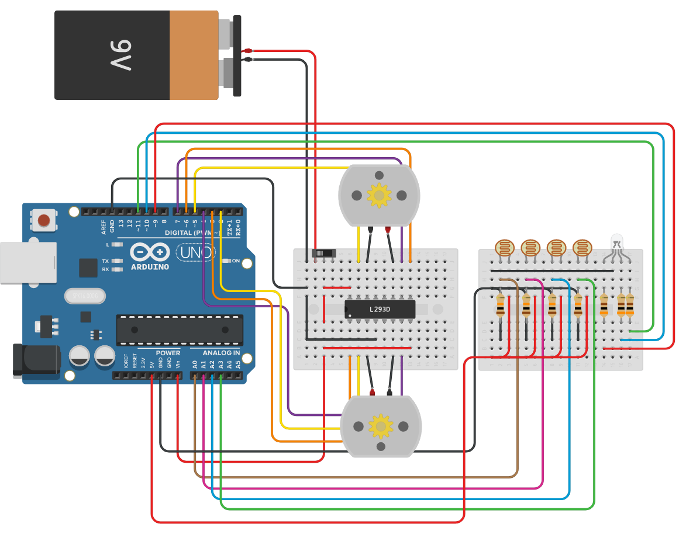

The
Lost
Sobre
Assim como os passageiros do voo 815 da Oceanic Airlines, os estudantes do curso de Engenharia de Software da Católica de Santa Catarina; Bruno Menslin, Cauê Girardi, Guilherme Vogt, Gustavo Pinheiro e Kelvin Ida se conheceram. O nome da equipe, “The Lost”, nos lembra de onde viemos, assim como, representa a incerteza em relação ao nosso futuro.
Robótica na Tecnologia da Informação
Os docentes do curso proporam um seminário, para dissertar acerca da importância da robótica na Tecnologia da Informação.
seguidor de linha
Uma das disciplinas do curso de Engenharia de Software da Católica de Santa Catarina, é o PAC (Projeto de Aprendizagem Colaborativa), com objetivo geral de programar um robô autônomo em linguagem C, utilizando sistema operacional Linux e documentar o processo em uma página da internet.
Segundo as normas editadas e adotando procedimentos temporários, durante o período de duração da pandemia de Covid-19, atividades em grupo, de forma presencial, foram suspensas. De tal forma, o robô autônomo da disciplina foi desenvolvido em grupo em uma plataforma de CAD online.
O robô escolhido foi um seguidor de linha, uma máquina pré-programada cuja função é detectar e seguir uma linha desenhada no chão. O caminho que o robô deve realizar é pré definido e apresentado em alto contraste. O robô é composto por rodas e motores para movimentação, sensores para detectar o traçado e uma placa lógica para controlar o robô.
A imagem abaixo representa a estrutura do robô, toda a parte funcional, seguida por uma breve explicação de cada componente do sistema e da codificação.
Arduino UNO R3
Arduino é uma plataforma de prototipagem eletrônica de hardware livre e de placa única, projetada com um microcontrolador Atmel AVR com suporte de entrada/saída embutido, a linguagem de programação suportada é essencialmente C/C++. O objetivo do projeto é criar ferramentas que são acessíveis, flexíveis e fáceis de se usar por principiantes e profissionais, principalmente para aqueles que não teriam alcance aos controladores mais sofisticados e ferramentas mais complicadas.
Placa de Ensaio Mini
Plataforma para a construção de circuitos eletrônicos. Esses dispositivos geralmente são usados na prototipagem e incluem vários furos nos quais componentes eletrônicos, como circuitos integrados (ICs), resistores e fios, podem ser encaixados. Alguns dos orifícios são conectados a outros por tiras de cobre, e é assim que os componentes eletrônicos são capazes de formar circuitos.
Motor CC
O motor é um dispositivo desenvolvido com a finalidade de converter energia elétrica em energia mecânica, de modo que ela possa ser utilizada para a operação de diversos equipamentos.
Bateria 9V
Uma bateria é um aparelho ou dispositivo que transforma em corrente elétrica a energia desenvolvida numa reação química. Cada célula de uma bateria contém um terminal positivo (cátodo) e um terminal negativo (ânodo). O processo químico de troca de elétrons é conhecido como oxirredução.
Acionador de Motor de Ponte H
Circuito integrado que contém duas pontes H completas. Com ele, é possível controlar dois motores DC bidirecionalmente, quatro solenóides ou um motor de passo. A versão com a letra “D” vem com diodos internos de proteção.Suas aplicações incluem o controle de cargas indutivas, como solenóides, relés, motores de passo e DC bipolares, assim como outras cargas de alta corrente/tensão. Suporta tensões de 4,5V até 36V, e é alimentado com tensão de 5V.
Fotorresistor
Resistor que varia sua resistência conforme a luz que incide sobre o seu corpo, funcionando como um sensor de iluminação. O resistor dependente de luz é muito usado em acendimento automático de lâmpadas, como em fotocélulas, ou em regulagem automática de brilho de telas.
Resistor
Componentes eletrônicos cuja principal função é limitar o fluxo de cargas elétricas por meio da conversão da energia elétrica em energia térmica. Os resistores são geralmente feitos a partir de materiais dielétricos, de grande resistência elétrica. A grande resistência elétrica dos resistores torna esses componentes capazes de reduzir a passagem da corrente elétrica.
Interruptor Deslizante
O interruptor é um dispositivo simples criado pelo médico Golding Bird, aproximadamente na década de 1840, utilizado na abertura de circuitos elétricos em redes, tomadas e entradas de aparelhos eletrônicos, basicamente na maioria das situações que envolvem o ligamento ou desligamento de energia elétrica.
Lâmpada de LED RGB
A lâmpada de LED RGB é constituída por três cores: vermelho, verde e azul. Alterando a intensidade e a mistura das cores, cores diferentes das primárias são formadas.
Codificação
// Portas driver motor
#define PININ1 2
#define PININ2 4
#define PININ3 5
#define PININ4 7
#define PINENA 3
#define PINENB 6
// Portas led rgb
#define PINLEDR 11
#define PINLEDG 9
#define PINLEDB 10
// Portas sensor QTR
#define SENSOR1 A0
#define SENSOR2 A1
#define SENSOR3 A2
#define SENSOR4 A3
#define SENSOR5 A4
#define SENSOR6 A5
// Valores de ajustes para o seguidor de linha MIF
#define TRESHOLD 512 // Valor de referencia para cor da linha branca
#define SPEED0 255 // Valor de 0 a 255 para velocidade com a seguinte leitura do sensor (0 0 1 1 0 0)
#define SPEED1 210 // Valor de 0 a 255 para velocidade com a seguinte leitura do sensor (0 0 1 1 1 0)
#define SPEED2 180 // Valor de 0 a 255 para velocidade com a seguinte leitura do sensor (0 0 0 1 0 0)
#define SPEED3 150 // Valor de 0 a 255 para velocidade com a seguinte leitura do sensor (0 0 0 1 1 0)
#define SPEED4 100 // Valor de 0 a 255 para velocidade com a seguinte leitura do sensor (0 0 0 1 1 1)
#define SPEED5 0 // Valor de 0 a 255 para velocidade com a seguinte leitura do sensor (0 0 0 0 1 0)
#define SPEED6 0 // Valor de 0 a 255 para velocidade com a seguinte leitura do sensor (0 0 0 0 1 1)
#define SPEED7 100 // Valor de 0 a 255 para velocidade com a seguinte leitura do sensor (0 0 0 0 0 1)
#define RUNTIME 25000 // Valor para executar o percurso
int ERRO = 0;
int ERRO_ANTERIOR = 0;
int I = 0;
int PID = 0;
int Kp = 0;
int Ki = 0;
int Kd = 0;
int velcorre = 0;
void setup()
{
Serial.begin(9600);
rgbControl(255, 0, 0, 1000);
rgbControl(0, 255, 0, 1000);
rgbControl(0, 0, 255, 1000);
}
void loop()
{
if (Serial.available())
{
rgbControl(0, 0, 255, 1);
char dado = Serial.read();
if (dado == '8' || dado == '2' || dado == '4' || dado == '6' || dado == '0')
{
motorOption(dado, 80, 80);
}
if (dado == 'z' || dado == 'x' || dado == 'y' || dado == 'a' || dado == 'b' || dado == 'c')
{
advancedOption(dado);
}
}
else
{
rgbControl(0, 255, 0, 1);
}
followLineMEF();
readSensors();
}
void advancedOption(char option)
{
// Função para controlar de opçãoes avançadas
switch (option)
{
case 'a':
readSensors();
break;
case 'b':
followLineMEF(); // Seguidor de linha com Máquina de Estados Finitos
break;
}
}
void motorControl(int speedLeft, int speedRight)
{
// Função para controle do driver de motor
// Definições das portas digitais
pinMode(PININ1, OUTPUT);
pinMode(PININ2, OUTPUT);
pinMode(PININ3, OUTPUT);
pinMode(PININ4, OUTPUT);
pinMode(PINENA, OUTPUT);
pinMode(PINENB, OUTPUT);
// Ajustes motor da esquerda
if (speedLeft < 0)
{
speedLeft = -speedLeft;
digitalWrite(PININ3, HIGH);
digitalWrite(PININ4, LOW);
}
else
{
digitalWrite(PININ3, LOW);
digitalWrite(PININ4, HIGH);
}
// Ajustes motor da direita
if (speedRight < 0)
{
speedRight = -speedRight;
digitalWrite(PININ1, LOW);
digitalWrite(PININ2, HIGH);
}
else
{
digitalWrite(PININ1, HIGH);
digitalWrite(PININ2, LOW);
}
analogWrite(PINENA, speedLeft);
analogWrite(PINENB, speedRight);
}
void motorOption(char option, int speedLeft, int speedRight)
{
// Função para controle de motor com pre definições
switch (option)
{
case '6': // Esquerda
motorControl(-speedLeft, speedRight);
break;
case '4': // Direita
motorControl(speedLeft, -speedRight);
break;
case '2': // Trás
motorControl(-speedLeft, -speedRight);
break;
case '8': // Frente
motorControl(speedLeft, speedRight);
break;
case '0': // Parar
motorControl(0, 0);
break;
}
}
bool motorStop(long runtime, long currentTime)
{
// Função de parada do robô
if (millis() >= (runtime + currentTime))
{
motorOption('0', 0, 0);
int cont = 0;
while (cont < 5)
{
rgbControl(255, 0, 0, 500);
rgbControl(0, 0, 0, 500);
cont++;
}
return false;
}
return true;
}
void rgbControl(int red, int green, int blue, long rumtime)
{
// Função para controle do led rgb
pinMode(PINLEDR, OUTPUT);
pinMode(PINLEDG, OUTPUT);
pinMode(PINLEDB, OUTPUT);
digitalWrite(PINLEDR, HIGH);
digitalWrite(PINLEDG, HIGH);
digitalWrite(PINLEDB, HIGH);
analogWrite(PINLEDR, 255 - red);
analogWrite(PINLEDG, 255 - green);
analogWrite(PINLEDB, 255 - blue);
delay(rumtime);
}
void readSensors(void)
{
// Função para leitura dos sensores
Serial.print(analogRead(A0));
Serial.print(' ');
Serial.print(analogRead(A1));
Serial.print(' ');
Serial.print(analogRead(A2));
Serial.print(' ');
Serial.print(analogRead(A3));
Serial.print(' ');
Serial.print(analogRead(A4));
Serial.print(' ');
Serial.println(analogRead(A5));
Serial.print(' ');
}
void followLineMEF(void)
{
// Função para controle do seguidor de linha em modo de maquina de estado finita
bool flag = true;
long currentTime = millis();
while (flag)
{
flag = motorStop(RUNTIME, currentTime);
// leitura do sensor (1 1 1 1 1 1)
if (analogRead(A0) <= TRESHOLD && analogRead(A1) <= TRESHOLD && analogRead(A2) <= TRESHOLD && analogRead(A3) <= TRESHOLD && analogRead(A4) <= TRESHOLD && analogRead(A5) <= TRESHOLD)
{
motorOption('8', SPEED0, SPEED0);
;
// leitura do sensor (0 1 1 1 1 0)
}
else if (analogRead(A0) >= TRESHOLD && analogRead(A1) <= TRESHOLD && analogRead(A2) <= TRESHOLD && analogRead(A3) <= TRESHOLD && analogRead(A4) <= TRESHOLD && analogRead(A5) >= TRESHOLD)
{
motorOption('8', SPEED0, SPEED0);
ERRO = 0;
// leitura do sensor (0 0 1 1 0 0)
}
else if (analogRead(A0) >= TRESHOLD && analogRead(A1) >= TRESHOLD && analogRead(A2) <= TRESHOLD && analogRead(A3) <= TRESHOLD && analogRead(A4) >= TRESHOLD && analogRead(A5) >= TRESHOLD)
{
motorOption('8', SPEED0, SPEED0);
ERRO = 0;
// leitura do sensor (0 1 1 1 0 0)
}
else if (analogRead(A0) >= TRESHOLD && analogRead(A1) <= TRESHOLD && analogRead(A2) <= TRESHOLD && analogRead(A3) <= TRESHOLD && analogRead(A4) >= TRESHOLD && analogRead(A5) >= TRESHOLD)
{
motorOption('8', SPEED0, SPEED1);
ERRO = 1;
calculapid(ERRO);
// leitura do sensor (0 0 1 1 1 0)
}
else if (analogRead(A0) >= TRESHOLD && analogRead(A1) >= TRESHOLD && analogRead(A2) <= TRESHOLD && analogRead(A3) <= TRESHOLD && analogRead(A4) <= TRESHOLD && analogRead(A5) >= TRESHOLD)
{
ERRO = -1;
calculapid(ERRO);
// leitura do sensor (0 0 1 0 0 0)
}
else if (analogRead(A0) >= TRESHOLD && analogRead(A1) >= TRESHOLD && analogRead(A2) <= TRESHOLD && analogRead(A3) >= TRESHOLD && analogRead(A4) >= TRESHOLD && analogRead(A5) >= TRESHOLD)
{
ERRO = 1.5;
calculapid(ERRO);
// leitura do sensor (0 0 0 1 0 0)
}
else if (analogRead(A0) >= TRESHOLD && analogRead(A1) >= TRESHOLD && analogRead(A2) >= TRESHOLD && analogRead(A3) <= TRESHOLD && analogRead(A4) >= TRESHOLD && analogRead(A5) >= TRESHOLD)
{
ERRO = -1.5;
calculapid(ERRO);
// leitura do sensor (0 1 1 0 0 0)
}
else if (analogRead(A0) >= TRESHOLD && analogRead(A1) <= TRESHOLD && analogRead(A2) <= TRESHOLD && analogRead(A3) >= TRESHOLD && analogRead(A4) >= TRESHOLD && analogRead(A5) >= TRESHOLD)
{
ERRO = 1.75;
calculapid(ERRO);
// leitura do sensor (0 0 0 1 1 0)
}
else if (analogRead(A0) >= TRESHOLD && analogRead(A1) >= TRESHOLD && analogRead(A2) >= TRESHOLD && analogRead(A3) <= TRESHOLD && analogRead(A4) <= TRESHOLD && analogRead(A5) >= TRESHOLD)
{
ERRO = -1.75;
calculapid(ERRO);
// leitura do sensor (1 1 1 0 0 0)
}
else if (analogRead(A0) <= TRESHOLD && analogRead(A1) <= TRESHOLD && analogRead(A2) <= TRESHOLD && analogRead(A3) >= TRESHOLD && analogRead(A4) >= TRESHOLD && analogRead(A5) >= TRESHOLD)
{
ERRO = 2;
calculapid(ERRO);
// leitura do sensor (0 0 0 1 1 1)
}
else if (analogRead(A0) >= TRESHOLD && analogRead(A1) >= TRESHOLD && analogRead(A2) >= TRESHOLD && analogRead(A3) <= TRESHOLD && analogRead(A4) <= TRESHOLD && analogRead(A5) <= TRESHOLD)
{
ERRO = -2;
calculapid(ERRO);
// leitura do sensor (0 1 0 0 0 0)
}
else if (analogRead(A0) >= TRESHOLD && analogRead(A1) <= TRESHOLD && analogRead(A2) >= TRESHOLD && analogRead(A3) >= TRESHOLD && analogRead(A4) >= TRESHOLD && analogRead(A5) >= TRESHOLD)
{
ERRO = 2;
calculapid(ERRO);
// leitura do sensor (0 0 0 0 1 0)
}
else if (analogRead(A0) >= TRESHOLD && analogRead(A1) >= TRESHOLD && analogRead(A2) >= TRESHOLD && analogRead(A3) >= TRESHOLD && analogRead(A4) <= TRESHOLD && analogRead(A5) >= TRESHOLD)
{
ERRO = -2;
calculapid(ERRO);
// leitura do sensor (1 1 0 0 0 0)
}
else if (analogRead(A0) <= TRESHOLD && analogRead(A1) <= TRESHOLD && analogRead(A2) >= TRESHOLD && analogRead(A3) >= TRESHOLD && analogRead(A4) >= TRESHOLD && analogRead(A5) >= TRESHOLD)
{
ERRO = 2.15;
calculapid(ERRO);
// leitura do sensor (0 0 0 0 1 1)
}
else if (analogRead(A0) >= TRESHOLD && analogRead(A1) >= TRESHOLD && analogRead(A2) >= TRESHOLD && analogRead(A3) >= TRESHOLD && analogRead(A4) <= TRESHOLD && analogRead(A5) <= TRESHOLD)
{
ERRO = -2.15;
calculapid(ERRO);
// leitura do sensor (1 0 0 0 0 0)
}
else if (analogRead(A0) <= TRESHOLD && analogRead(A1) >= TRESHOLD && analogRead(A2) >= TRESHOLD && analogRead(A3) >= TRESHOLD && analogRead(A4) >= TRESHOLD && analogRead(A5) >= TRESHOLD)
{
motorOption('6', SPEED7, SPEED7);
// leitura do sensor (0 0 0 0 0 1)
}
else if (analogRead(A0) >= TRESHOLD && analogRead(A1) >= TRESHOLD && analogRead(A2) >= TRESHOLD && analogRead(A3) >= TRESHOLD && analogRead(A4) >= TRESHOLD && analogRead(A5) <= TRESHOLD)
{
motorOption('4', SPEED7, SPEED7);
}
}
motorOption('0', 0, 0);
}
void calculapid(int ERRO)
{
int I = 0;
int P = 0;
int D = 0;
if (ERRO == 0)
{
I = 0;
}
P = ERRO;
I = (I + ERRO);
if (I > 255)
{
I = 255;
}
else if (I < 255)
{
I = -255;
}
D = (ERRO - ERRO_ANTERIOR);
PID = (Kp * P) + (Ki * I) + (Kd * D);
ERRO_ANTERIOR = ERRO;
controlaMotorPID(PID);
}
void controlaMotorPID(int PID)
{
if (PID >= 0)
{
velcorre = (SPEED0 - PID);
motorOption('8', SPEED0, velcorre);
}
else
{
velcorre = SPEED0 + PID;
motorOption('8', velcorre, SPEED0);
}
}